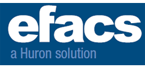

Huron Research Suite
Huron Agreements (Coming in Summer 2019)
Huron IACUC (Coming in Summer 2019)
Huron Grants (Coming in Fall 2019)
Huron COI (Coming in Spring 2020)
Reporting Tools
Research Development & Training
Contract and Document Management
Commercialization
Other Research Administration

eFacilities and Administrative Cost System